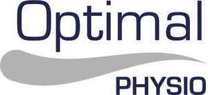

Trade Mark Journal No.2025/034 22 August 2025
UK00004248717 13 August 2025 (10,11,35,41,44)

- Class 10
- Nerve muscle stimulators; Electrical nerve stimulators; Transcutaneous electrical nerve stimulators; Physical therapy devices; Physical therapy equipment; Electro-stimulation apparatus for use in therapeutic treatment; Heat therapy apparatus; Ultrasonic therapy apparatus.
- Class 11
- Saunas.
- Class 35
- Retail services in relation to physical therapy equipment.
- Class 41
- Health and wellness training; Health and fitness training; Health club [fitness] services; Health education; Physical health education; Provision of educational health and fitness information; Sports and fitness services; Providing of training in the field of health care and nutrition; Physical fitness training services; Physical fitness consultation; Education services relating to physical fitness; Exercise [fitness] training services; Fitness and exercise training services; Sports and fitness; Education services relating to yoga; Education services relating to nutrition; Physical fitness education services; Educational services relating to physical fitness; Education services relating to health; Educational services in the nature of coaching.
- Class 44
- Physiotherapy; Physiotherapy services; Physiotherapy [physical therapy]; Electro therapy services for physiotherapy; Acupressure therapy; Cupping therapy services; Medical counselling; Medical services in the field of treatment of chronic pain; Bodywork therapy; Dietetic counselling services [medical]; Therapy services; Therapeutical pilates; Chiropractic; Osteopathy; Physical therapy services; Heat therapy [medical]; Medical treatment services; Medical clinic services; Cupping therapy; Massage and therapeutic shiatsu massage; Sports massage; Medical treatment services provided by a health spa; Massage services; Health clinic services [medical]; Sports medicine services; Medical spa services; Hot stone massage therapy services; Health care relating to relaxation therapy; Cryotherapy services; Physical therapy; Therapy (Physical -); Medical treatment services provided by clinics and hospitals; Health counselling; Physical rehabilitation; Nutrition counselling; Health care relating to therapeutic massage; Sauna services; Infrared sauna services; Provision of sauna facilities; Sauna facilities (Provision of -); Operation of sauna facilities; Providing sauna facilities; Services for the provision of sauna facilities; Hot stone massage; Massage; Spa services; Provision of spa facilities; Massages; Health spa services; Health counseling; Mental health services; Health clinic services; Health consultancy; Health care; Health care relating to acupuncture; Medical health assessment services; Health assessment services; Nutrition and dietetic consultancy; Medical testing services, namely, fitness evaluation; Fitness testing; Light therapy services; Shockwave therapy; Providing laser therapy for treating medical conditions.
Optimal Physio Limited